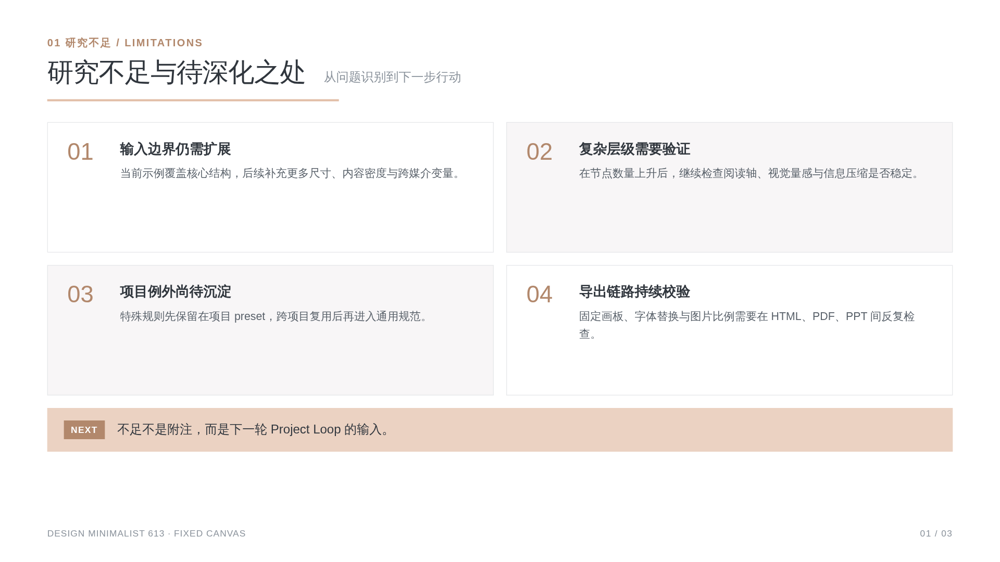
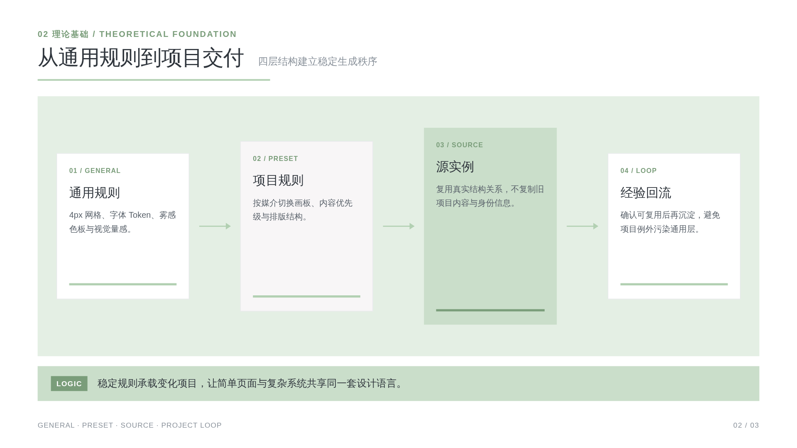
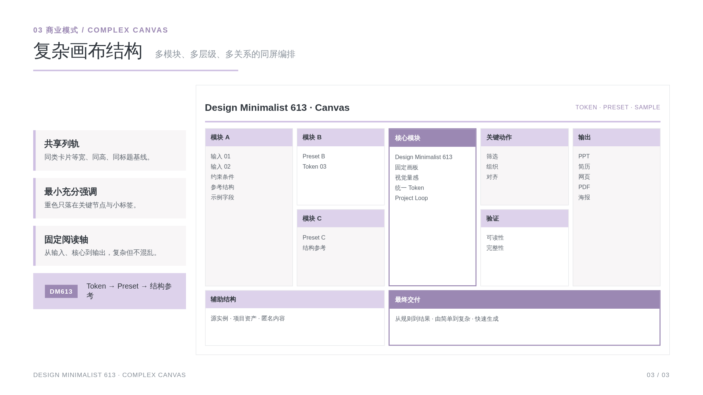
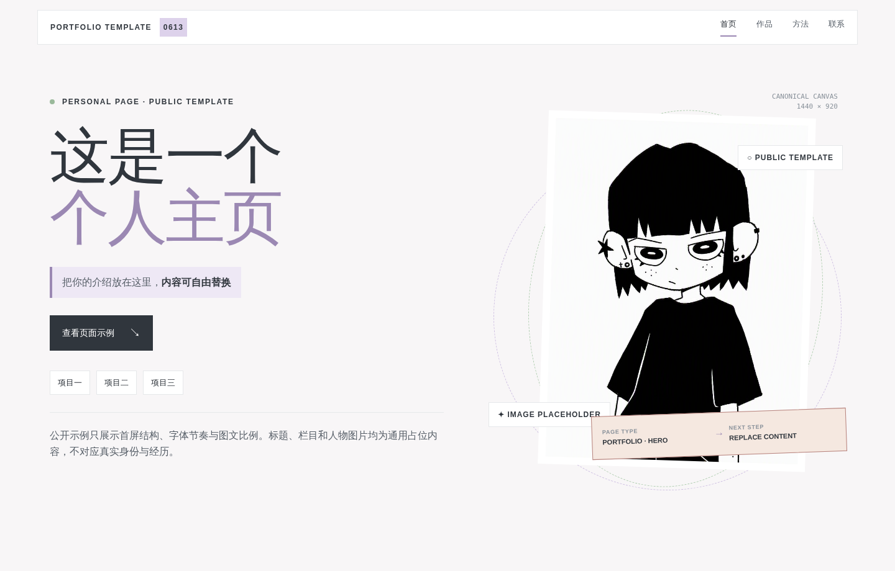
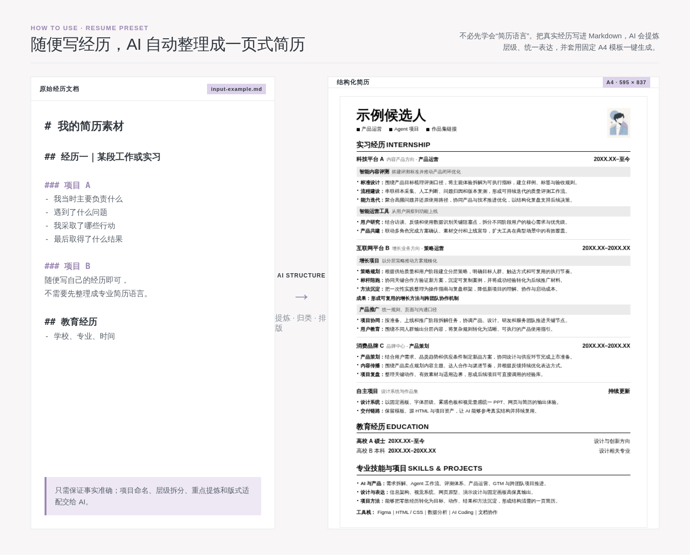
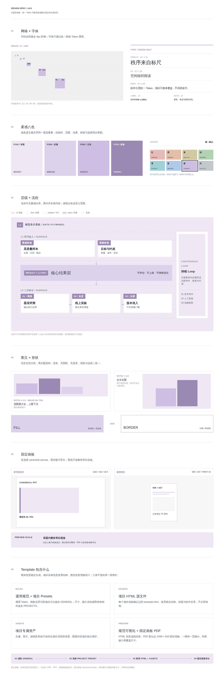

ASSET GALLERY · DESIGN SYSTEM
一次查看全部设计资产
在同一页面浏览 PPT、个人网页、简历生成方式与完整设计哲学，不必逐个打开源代码，也能快速理解这套 Skill 的视觉效果和使用方式。
01 / PRESENTATION
研究型演示



02 / PERSONAL WEB
个人网页首图

03 / RESUME
从经历文档到一页简历

04 / DESIGN SYSTEM
完整设计哲学
